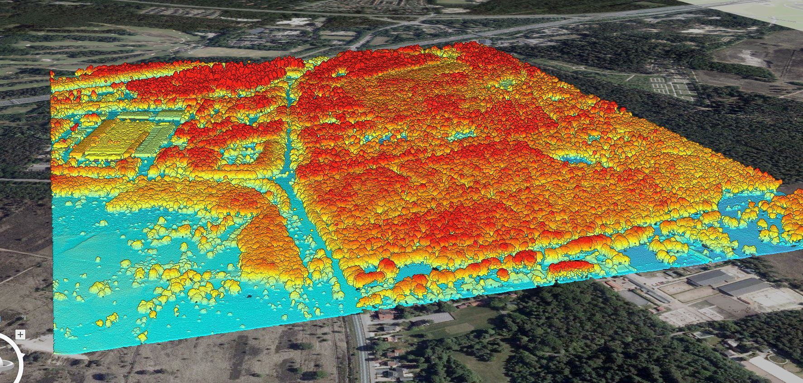
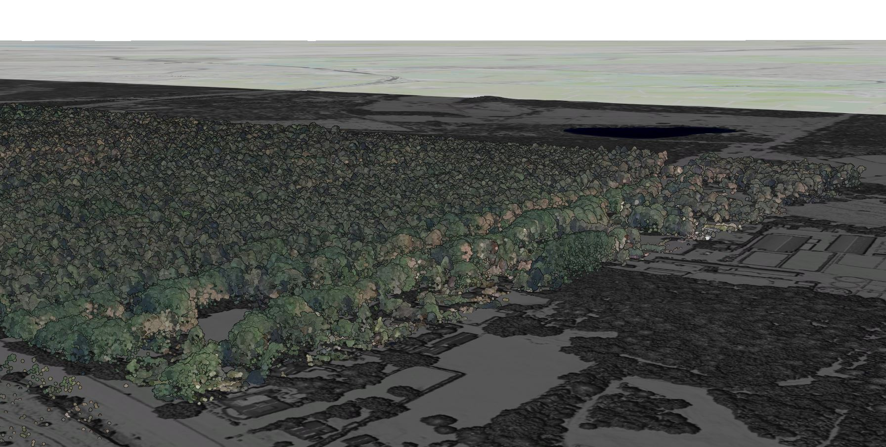
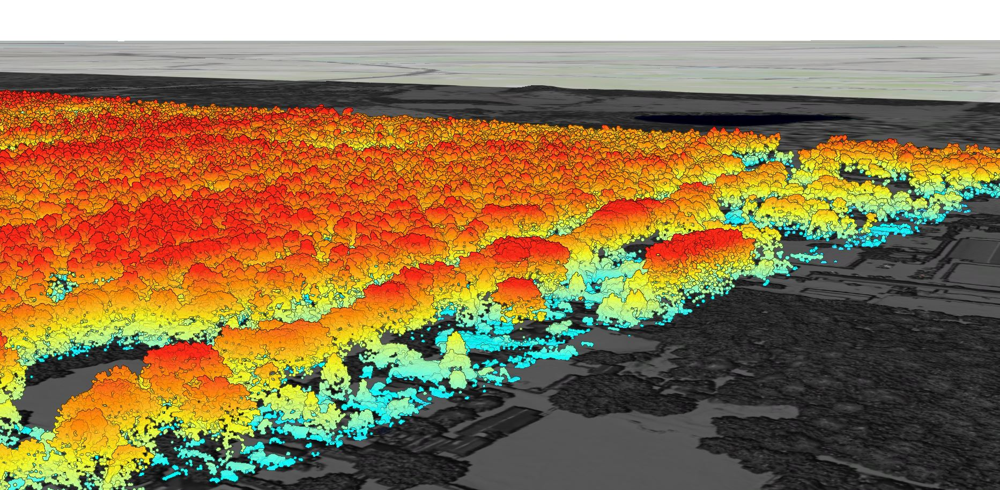

Lidar Webscene
3D visualisation of a part of the Utrechtse Heuvelrug
A LiDAR webscene is a 3D visualisation of terrain and landscape features created using Light Detection and Ranging (LiDAR) data. This technology uses laser pulses to generate precise, high-resolution maps of the Earth's surface, capturing details about topography, vegetation, and built structures, in contrast to a Digital Terrain Model. LiDAR webscenes are important because they provide an immersive way to explore and analyze spatial data, valuable for urban planning and disaster management. One key feature in creating LiDAR webscenes is "extrusion," which involves extending 2D shapes vertically to form 3D objects. For instance, building footprints can be extruded to represent their heights, creating realistic cityscapes. By enabling detailed analysis of terrain and structural features, LiDAR webscenes facilitate better decision-making and enhance our understanding of complex landscapes.
LiDAR Webscene with Elevation Symbology of a part of the Utrechtse Heuvelrug
This image is a LiDAR webscene visualization of a part of the Utrechtse Heuvelrug, highlighting the dense forest cover in the area. The 3D perspective uses elevation data to depict the terrain and vegetation. The ground appears in a darker, muted color, while the tree canopy is shown in a vibrant palette, indicating their height and distribution. The use of extrusion in this webscene is evident, as the tree heights are extruded to provide a realistic representation of the forest's vertical structure.
I chose to use the elevation symbology for the LiDAR webscene of the Utrechtse Heuvelrug. After experimenting with different types of symbology, I found that this one effectively showcases the organization of the landscape. The ground is depicted in bright blue, while the trees, being higher, have red peaks. Although I also experimented with classification, it didn't seem particularly relevant in this context. The classes for crop fields and driveways were rendered in the same color, and I realized that supervised classification would be necessary to adjust the specific parts that do not align with the correct labels. In this area, fields, a farmhouse, roads and vegetation are emphasized.